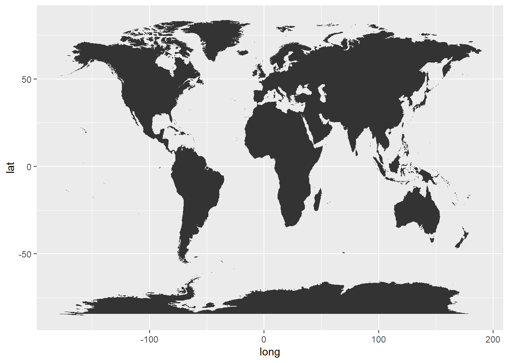
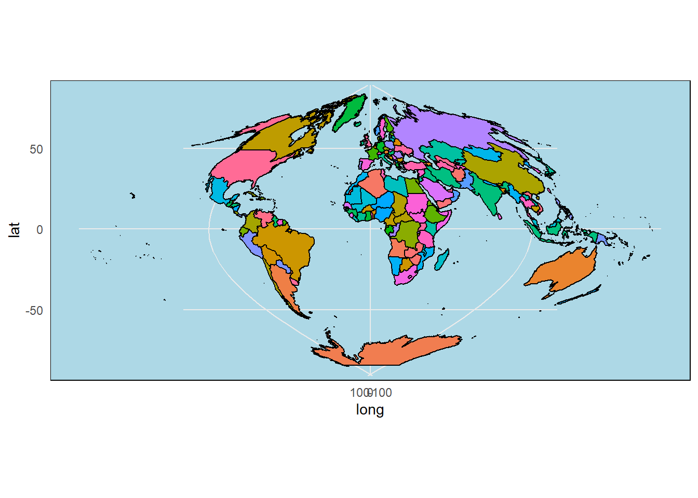
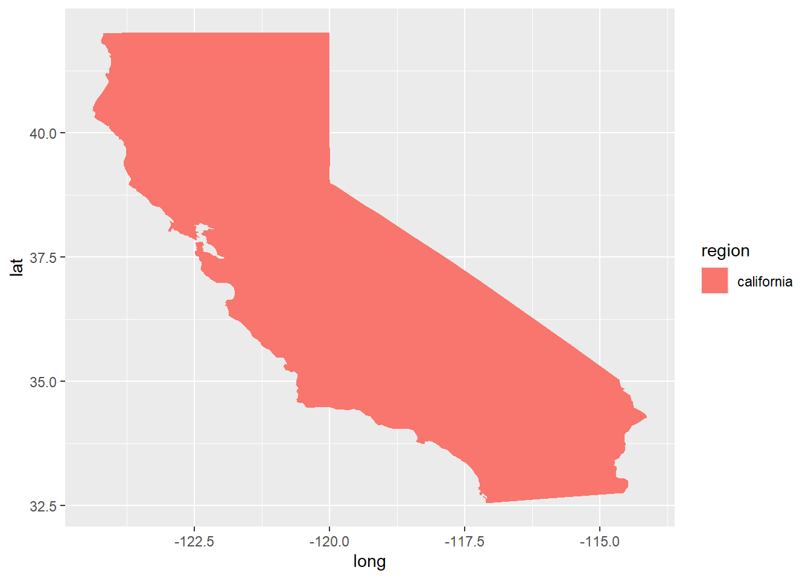

Show code
library(tidyverse)
library(here)
#library(rsconnect) # maybe no need
library(maps)
library(mapdata)
library(mapproj)Let’s begin by loading some libraries:
(maps, mapdata, and mapproj are new!)
library(tidyverse)
library(here)
#library(rsconnect) # maybe no need
library(maps)
library(mapdata)
library(mapproj)Today we will be working with Maps!
specifically the {maps} function and the {sf} function
{maps} is the package we will use today. Very simple
{sf} and {rnaturalearth} are more complicated and fancy map packages for people who love making fancy maps
{maptiles} for the online lecture (uses satellite data)
{leaflet} interactive maps
{tmap} more interactive maps
{ggmap} the kind of free trial that requires a credit card
# Population in California by county
popdata <- read_csv(here("Week_07", "Data", "CApopdata.csv"))
# Seastar counts at field sites in California
stars <- read_csv(here("Week_07", "Data", "stars.csv"))world <- map_data("world")
head(world) long lat group order region subregion
1 -69.89912 12.45200 1 1 Aruba <NA>
2 -69.89571 12.42300 1 2 Aruba <NA>
3 -69.94219 12.43853 1 3 Aruba <NA>
4 -70.00415 12.50049 1 4 Aruba <NA>
5 -70.06612 12.54697 1 5 Aruba <NA>
6 -70.05088 12.59707 1 6 Aruba <NA>usa <- map_data("usa")
head(usa) long lat group order region subregion
1 -101.4078 29.74224 1 1 main <NA>
2 -101.3906 29.74224 1 2 main <NA>
3 -101.3620 29.65056 1 3 main <NA>
4 -101.3505 29.63911 1 4 main <NA>
5 -101.3219 29.63338 1 5 main <NA>
6 -101.3047 29.64484 1 6 main <NA>states <- map_data("state")
head(states) long lat group order region subregion
1 -87.46201 30.38968 1 1 alabama <NA>
2 -87.48493 30.37249 1 2 alabama <NA>
3 -87.52503 30.37249 1 3 alabama <NA>
4 -87.53076 30.33239 1 4 alabama <NA>
5 -87.57087 30.32665 1 5 alabama <NA>
6 -87.58806 30.32665 1 6 alabama <NA>counties <- map_data("county")
head(counties) long lat group order region subregion
1 -86.50517 32.34920 1 1 alabama autauga
2 -86.53382 32.35493 1 2 alabama autauga
3 -86.54527 32.36639 1 3 alabama autauga
4 -86.55673 32.37785 1 4 alabama autauga
5 -86.57966 32.38357 1 5 alabama autauga
6 -86.59111 32.37785 1 6 alabama autaugaThese will pull all the data for the states and counties in the (mainland) US.
long - longitude
lat - latitude
order - the order in which ggplot connects the dots
region/subregion - the region or subregion a set of points surrounds
group - THIS ONE IS IMPORTANT : control whether the points next to each other are connected or not. Points in the same group get connected, different groups cause ggplot to “lift the pen”
ggplot() +
geom_polygon(data = world,
aes(x = long, y = lat,
group = group))
Nice, alright
Because we want them to be separate from ALL plots, we only want it to apply to the polygon plot.
ggplot() +
geom_polygon(data = world,
aes(x = long, y = lat,
group = group,
fill = region),
color = "black") +
guides(fill = "none") + # Make sure to remove the guide or else we will have SO MUCH Legend that there is no map
theme_minimal() + # Make the theme minimal!
theme(panel.background =
element_rect(fill = "lightblue")) + # make the ocean blue!
coord_map(projection = "sinusoidal", # change the projection
xlim = c(-180, 180))
ok add california map data:
CA_data <- states |>
filter(region == "california")Challenge: Make a simple map of california!
ggplot() +
geom_polygon(data = CA_data,
aes(x = long, y = lat,
group = group,
fill = region))